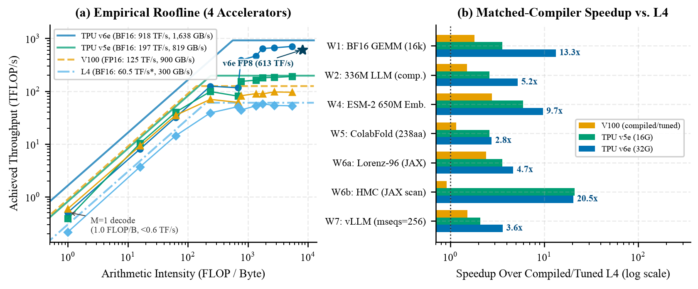
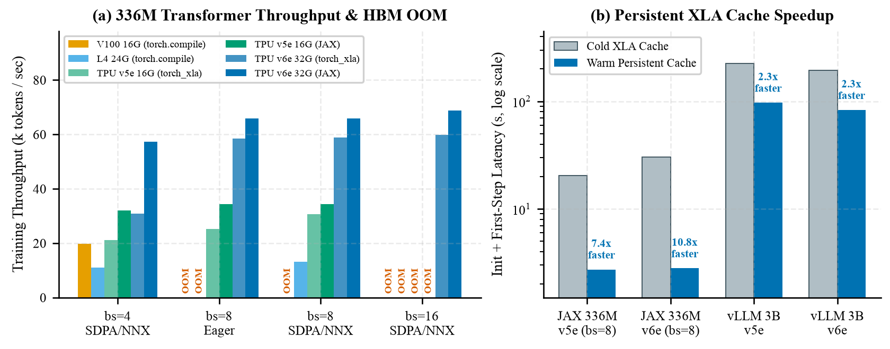
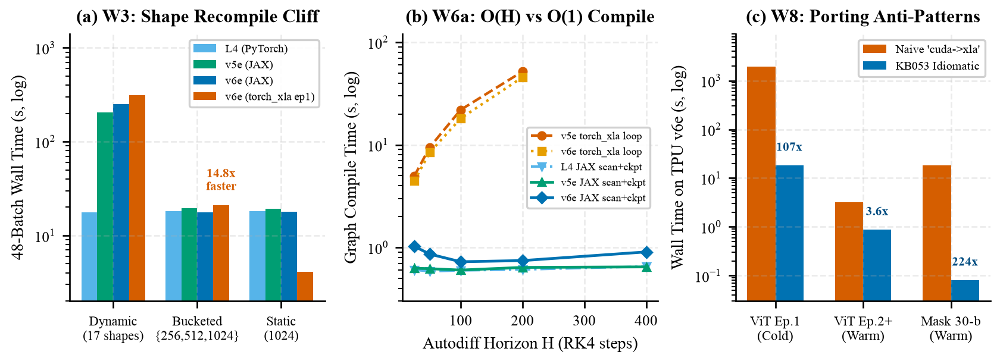
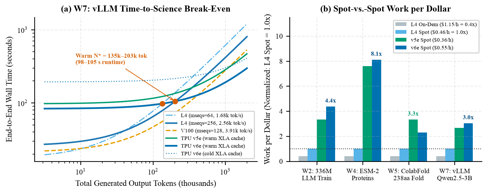
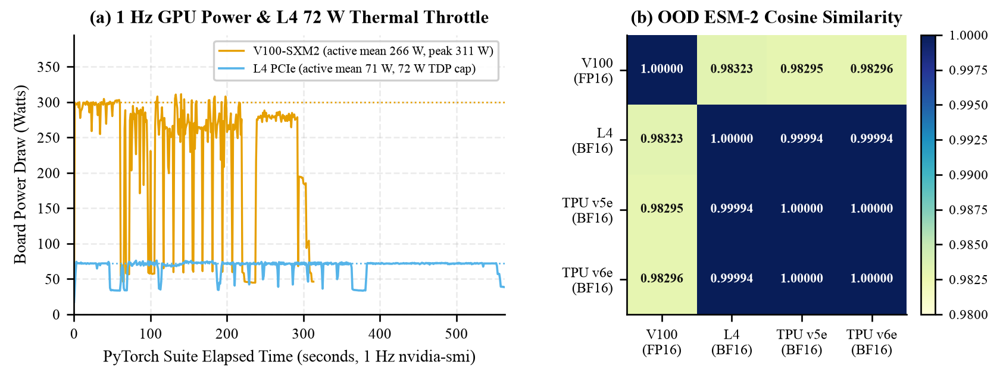

Abstract
Campus Slurm clusters face long NVIDIA GPU queues while cloud providers hold Spot Tensor Processing Unit (TPU) pools at lower hourly rates. Peak FLOP sheets hide whether moving CUDA code to OpenXLA finishes finite batch jobs sooner, because wall time sums porting, queue wait, boot, compilation, and step execution. On UC Riverside's Google Cloud Slurm cluster, I built a TPU software stack, static script checks, and Apptainer recipes, benchmarking eight workloads across V100 (16 GiB), L4 (24 GiB, 72 W), TPU v5e (16 GiB), and TPU v6e Trillium (32 GiB).
Against compiler-matched and concurrency-tuned L4 baselines
(torch.compile, XLA-GPU jax.lax.scan, and
saturated vLLM), TPU v5e and v6e speed up steady-state runs by 2.6x
and 2.8x on ColabFold (9.1x on AlphaFold2 model inference), 2.1x and
3.6x on vLLM Qwen2.5-3B, 2.6x and 5.2x on 336M Transformer training,
3.6x and 4.7x on JAX Lorenz-96, 6.0x and 9.7x on ESM-2 650M, and
21.0x and 20.5x on JAX Hamiltonian Monte Carlo, delivering 3.0x to
8.1x more work per dollar than Spot L4 (7.6x to 20.3x vs. on-demand
L4). Persistent XLA caches, power-of-2 bucketing, and
lax.scan loops eliminate 14.8x to 224x naive-port
slowdowns.
The work was directed by me and carried out with AI agents under written briefs, Crossref and adversarial verification checks, and explicit approval steps. Figures come from the recorded JSONL, CSV, and NPY telemetry and container manifests. This note was drafted with AI assistance from those records and reviewed by me; views here are my own, not UC policy.
Cite this note
C. E. Forsyth III. 2026. Decreasing Time-to-Science with Cloud TPUs on a Campus Slurm Cluster. Field Notes. doi:10.5281/zenodo.24224726
Context
Graduate students running protein models, physics integrators, or
batch large language model (LLM) annotation wait behind congested
single-GPU queues while cloud projects hold preemptible TPU quotas
at $0.36 to $0.55 per chip-hour.[1], [2],
[3]
On Ursa Major, the Google Cloud Slurm cluster I direct at UC
Riverside (14 partitions, 137 node slots; 14 November 2026
operational snapshot, not campus allocation policy),
us-central1 quota allowed 1,536 preemptible TPU v6e
chips and 128 TPU v5e chips versus 8 on-demand L4 GPUs
(gpul4) and 4 legacy V100 GPUs (gpu1v1).
Note the hardware scope: V100 and 72 W PCIe L4 represent this campus
cluster's actual GPU partitions rather than 400 to 700 W datacenter
A100 or H100 SXM nodes. Adding a TPU partition alone did not move
jobs off GPUs: when changing device="cuda" to
device="xla" triggered a three-minute startup stall or
twenty-minute recompilation loop, researchers returned to the GPU
queue.
Industry benchmarks such as MLPerf isolate steady-state step time
t_step after warmup.[4]
Domain scientists care instead about end-to-end wall-clock
time-to-science for a finite batch of N training steps,
folded structures, or generated tokens:
T_science(N) = T_port + T_queue + T_boot + T_compile + N *
t_step, paired with cloud expenditure
C(N) = (p_hr / 3600) * (T_boot + T_compile + N * t_step) +
C_stage + C_retry. On CUDA GPUs, existing PyTorch scripts run unmodified (T_port = 0) and pre-compiled cuBLAS or FlashAttention-2 kernels launch in
milliseconds (or 6 to 56 s under torch.compile). On
Cloud TPUs, OpenXLA lowers whole graphs through StableHLO, assigns
tiled layouts for 128x128 (v5e) or 256x256 (v6e) systolic Matrix
Multiply Units (MXUs), and fuses elementwise chains into on-chip
Vector Memory (VMEM).[5], [6]
Even under static shapes (T_port = T_queue = 0), a TPU
beats a GPU in wall time only above the critical volume
N* = ((T_boot,TPU + T_compile,TPU) - (T_boot,GPU +
T_compile,GPU)) / (t_step,GPU - t_step,TPU). Table 1 compares the four single-chip nodes across hardware,
Roofline ridge points, fused and eager STREAM triad bandwidth,
active board power, and US Google Cloud rates.
Table 1. Hardware architecture, memory hierarchy, Roofline ridge
points, measured STREAM triad bandwidth (both fused
torch.compile/XLA and eager PyTorch), active board
power, and US Google Cloud node-hour rates (14 Nov 2026).
| Specification / Metric | NVIDIA V100 (gpu1v1) |
NVIDIA L4 (gpul4) |
TPU v5e (tpuspot) |
TPU v6e (tpu6spot) |
|---|---|---|---|---|
| GCE machine type | n1-standard-8 + V100 |
g2-standard-16 (PCIe) |
ct5lp-hightpu-1t |
ct6e-standard-1t |
| Host vCPUs / Host RAM | 8 vCPU / 30 GiB | 16 vCPU / 64 GiB | 24 vCPU / 48 GiB | 44 vCPU / 172 GiB |
| Matrix engine per chip | 640 Volta TC | 240 Ada TC | 4x(128x128) MXU | 2x(256x256) MXU |
| Peak dense half TFLOP/s | 125.0 (FP16) | 60.5 (BF16) | 197.0 (BF16) | 918.0 (BF16) |
| Peak dense FP8 TFLOP/s | Unsupported | 121.0 | Upcast to BF16 | 1,836.0 |
| Device memory & peak BW | 16 GiB (900 GB/s) | 24 GiB (300 GB/s) | 16 GiB (819 GB/s) | 32 GiB (1,638 GB/s) |
| Half-precision ridge point | 138.9 FLOP/B | 201.7 FLOP/B | 240.5 FLOP/B | 560.4 FLOP/B |
| Fused STREAM triad BW | 843.8 +/- 0.6 GB/s | 234.4 +/- 0.2 GB/s | 617.9 +/- 0.3 GB/s | 1,152.1 +/- 11.4 GB/s |
| Eager PyTorch STREAM BW | 473.3 +/- 45.4 GB/s | 133.5 +/- 12.1 GB/s | XLA-fused | XLA-fused |
| Measured active board power | 265.6 W (311.3 W pk) | 71.0 W (72 W cap) | Not guest-exposed | Not guest-exposed |
| US On-Demand / Spot (USD/h) | $2.86 / $0.86 | $1.15 / $0.46 | $1.20 / $0.36 | $2.70 / $0.55 |
Notes: Each v6e chip holds one TensorCore with two 256x256 MXUs
performing 128K BF16 MACs (256K FLOPs) per MXU per cycle (~1.75
GHz). NVIDIA L4 datasheets quote 121 TFLOP/s BF16 and 242 TFLOP/s
FP8 with 2:4 structured sparsity; dense ceilings are 60.5 and 121.0
TFLOP/s. On STREAM triad (768 MiB, crediting 12 B/element),
torch.compile fuses GPU kernels to 12 B/element (663.9
and 227.6 GB/s under XLA-GPU JAX), whereas eager PyTorch launches
two kernels moving 20 B/element physically. Cloud TPU VMs omit guest
Watt counters.[7]
Fallback Spot rates were $0.425/h (us-south1 v5e) and
$0.605/h (europe-west4 v6e).
Related Work
Google's architectural papers document four generations of
systolic-array specialization. Jouppi et al. showed that
inference-only TPU v1 reached 92 INT8 TOPS with 15x to 30x speedups
over contemporary CPUs and K80 GPUs by replacing scalar register
files and caches with a 256x256 MAC array.[8]
TPU v2 and v3 added high-bandwidth memory (HBM), vector/scalar
coprocessors, and hardware bfloat16 (bf16)
multiply with float32 accumulation across 1,024-chip
pods.[9], [10]
TPU v4 introduced optical circuit switches and SparseCores,
outperforming NVIDIA A100 by 1.2x to 1.7x at lower power.[7]
Cloud TPU v5e targets single-chip and small-slice cost efficiency
(197 BF16 TFLOP/s, 819 GB/s HBM), while sixth-generation Cloud TPU
v6e (Trillium) expands MXUs from 128x128 to 256x256, doubles HBM
capacity and bandwidth to 32 GiB and 1,638 GB/s, and adds native FP8
support reaching 918 BF16 and 1,836 FP8 TFLOP/s per chip.[1], [2]
Prior TPU studies focus on pod-scale pretraining rather than
single-chip campus batch jobs where elastic VM boot and cold XLA
compilation compete directly against runtime.
On the compiler side, the Roofline model of Williams, Waterman, and
Patterson bounds kernel throughput by
min(Peak_FLOPs, Peak_BW * I), placing the ridge point
at I* = Peak_FLOPs / Peak_BW.[11]
Mixed-precision FP16 training requires dynamic loss scaling to
prevent subnormal gradient underflow,[12]
whereas BF16 retains FP32's 8-bit exponent.[10]
Dao's FlashAttention and FlashAttention-2 tile attention blocks in
GPU SRAM to eliminate quadratic HBM traffic;[13], [14]
on TPUs, OpenXLA fuses reduction and elementwise subgraphs through
StableHLO,[15], [5],
[6]
while custom block-tiled online softmax uses Pallas SplashAttention
kernels.[16] Ansel et
al. built PyTorch 2 (TorchDynamo and
TorchInductor) for Python bytecode capture and Triton
kernel fusion on CUDA,[17]
contrasting with torch_xla's lazy tensor tracing.
In scientific workloads and cloud-bursting, AlphaFold2,[18]
ColabFold,[19]
ESM-2,[20]
differentiable integrators in JAX-MD and Diffrax,[21], [22],
[23]
Hamiltonian Monte Carlo,[24]
and vLLM PagedAttention[25]
provide my application baselines. Hybrid Slurm bursting tools such
as Skyway,[26], [27]
multi-cloud preemptible GPU pools,[28]
and Singularity/Apptainer containers[29]
assume homogeneous x86/CUDA targets (T_port = 0). I
measure and mitigate the cross-architecture boundary when a Slurm
cluster bursts GPU-authored science onto Cloud TPUs.
Containers and Experimental Protocol
To expose Cloud TPUs as standard Slurm partitions rather than
standalone VMs, I deployed three software layers on Ursa Major prior
to benchmarking. First, I isolated TPU modules under
/apps/modulefiles-tpu (prepended automatically on
tpu, tpuspot, and
tpu6spot nodes). Auditing initial TPU Python installs
uncovered 9.11 GiB of dead nvidia-*-cu12 and
triton wheels pulled transitively by scientific
libraries; purging them and installing native OpenXLA wheels
produced seven modules: python-tpu/2026.10 (JAX 0.12.0,
Flax 0.12.10 NNX, Optax 0.2.8, Orbax 0.12.7, Diffrax, BlackJAX),
pytorch-tpu/2026.10 (PyTorch 2.9.1+cpu,
torch_xla 2.9.0, Transformers, Fair-ESM 2.0.0),
vllm-tpu/2026.11, colabfold-tpu/1.5.5,
python-ts-tpu/2026.11, jax-sci/2026.11,
and r-keras-tpu/2026.11. Second, because Compute Engine
rejects bulk MIG inserts on TPU machine types, I patched
slurm-gcp's resume.py to issue per-node
instances.insert calls with sequential multi-zone
fallback across us-central1-b/a/c, updated Ursa Major's
MCP assistant (ursa-bifrost v0.10.10,
covered in an
earlier Field Note) to validate partition-scoped TPU modules in
script_check, and published a campus porting guide
(KB053).
Third, to document exact provenance, I recorded SHA-256 digests and
pip freeze manifests across all runtimes. Primary GPU
PyTorch runs used python-ml/2026.09 (PyTorch
2.5.1+cu124) and vllm-0.6.4-cuda12.4.sif (4.84 GiB,
2e95aeda, TorchInductor + Triton 3.1.0 for
torch.compile and W7 GPU vLLM); GPU XLA-JAX controls
and W5 ColabFold ran inside
alphafold-colabfold.sif (2.69 GiB,
ee874d9f, CUDA JAX 0.4.20 + ColabFold 1.5.5). Primary
TPU runs used python-tpu/2026.10 (JAX W1-W3, W6),
pytorch-tpu/2026.10 (PyTorch/XLA W1-W4, W6, W8),
colabfold-tpu/1.5.5 (W5), and
vllm-tpu.sif (2.15 GiB, 861b0279, vLLM V1
OpenXLA engine for W7). I also built standalone Apptainer images
from repository .def files,
ursa-bench-gpu.sif (4.35 GiB, b646a76f)
and ursa-bench-tpu.sif (493 MiB,
78d87384), verifying container-versus-module parity
across W1 GEMM/STREAM (-0.22% V100, +0.84% L4, 0.002% to 0.25% v5e),
W4 650M ESM-2 (-0.001% BF16 and -0.010% FP16 on L4), and W6a/W6b
(0.002% and 1.57% on v5e), bounding Apptainer overhead at <=
1.57%. Every run staged weights (13.4 to 16.4 GiB) onto node-local
SSD (/tmp) via dereferenced cp -rL before
timing began, separating compilation from N = 5 timed
trials (N = 3 on TPU ColabFold and W3 sweeps) with
10,000-resample bootstrap 95% CIs and exact permutation Mann-Whitney
U p-values.
Empirical Roofline, Precision and Power
Workload W1 measures memory bandwidth and matrix multiplication
throughput across precisions and aspect ratios (Figure 1 and Table
2). On the 768 MiB STREAM triad (a = b + 2c), eager
PyTorch on NVIDIA L4 reports 133.5 +/- 12.1 GB/s because two unfused
CUDA kernels move 20 B/element physically across GDDR6 (232.7 GB/s
physical traffic). Compiling the triad with
torch.compile fuses both ops into one 12 B/element
Triton kernel, lifting L4 to 234.4 +/- 0.2 GB/s (78.1% of its 300
GB/s peak) and V100 to 843.8 +/- 0.6 GB/s (93.8% of 900 GB/s). Even
against fused torch.compile L4, TPU v5e (617.9 +/- 0.3
GB/s) and TPU v6e Trillium (1,152.1 +/- 11.4 GB/s, 70.3% of 1,638
GB/s) deliver 2.64x and 4.91x higher HBM bandwidth (8.63x [8.24,
9.41] over eager L4).

Table 2. Steady-state performance (mean +/- SD, N=5 trials; N=3 on TPU W5), cold/warm compilation latency, compiler-matched TPU v6e speedup over NVIDIA L4 with 95% bootstrap CIs and Mann-Whitney U p-values, Spot-vs.-Spot work per dollar (vs. L4 Spot at $0.46/h), and absolute best Spot output per dollar.
| Workload | Metric / Mode | V100 (16G) | L4 (24G) | TPU v5e (16G) | TPU v6e (32G) | v6e vs. L4 [95% CI] (p) | Spot/$ vs. L4 | Best Spot Output/$ |
|---|---|---|---|---|---|---|---|---|
| W1 STREAM | Fused BW (GB/s) | 843.8 +/- 0.6 | 234.4 +/- 0.2 | 617.9 +/- 0.3 | 1,152.1 +/- 11.4 | 4.91x [4.87, 4.95] (.008) | 4.11x (v6e) | v6e: 7.54 TB/$ |
| W1 GEMM 16k | Half TFLOP/s | 95.5 +/- 0.2 | 52.8 +/- 0.3 | 189.9 +/- 0.02 | 705.0 +/- 19.9 | 13.35x [13.01, 13.59] (.008) | 11.16x (v6e) | v6e: 4.61 EFLOP/$ |
| W1 GEMM 16k | FP8 TFLOP/s | Unsupported | 95.5 +/- 0.4 | 183.3 +/- 0.02 | 612.9 +/- 0.3 | 6.42x [6.40, 6.44] (.008) | 5.37x (v6e) | v6e: 4.01 EFLOP/$ |
W2 LLM (bs=8) |
Compiled ktok/s | OOM (16G) | 13.13 +/- 0.15 | 34.27 +/- 0.21 | 65.85 +/- 0.89 | 5.01x [4.95, 5.09] (.008) | 4.19x (v6e) | v6e: 431 Mtok/$ |
| W2 LLM (peak) | Max-bs ktok/s | 19.82 +/- 0.01 | 13.13 +/- 0.15 | 34.27 +/- 0.21 | 68.75 +/- 0.45 | 5.24x [5.18, 5.29] (.008) | 4.38x (v6e) | v6e: 450 Mtok/$ |
| W2 Init Cache | Cold / Warm (s) | 34.3 / 0.58 | 55.8 / 0.69 | 20.33 / 2.74 | 22.18 / 2.13 | 10.4x XLA cache gain | - | - |
| W4 ESM-2 650M | Embed prot/s | 46.69 +/- 0.01 | 16.82 +/- 0.03 | 100.2 +/- 0.35 | 163.2 +/- 0.16 | 9.70x [9.69, 9.72] (.016) | 8.12x (v6e) | v6e: 1.07M prot/$ |
| W5 ColabFold | 238-aa GFP warm (s) | 43.17 +/- 0.13 | 50.03 +/- 0.36 | 19.16 +/- 0.01 | 18.12 +/- 0.64 | 2.76x [2.66, 2.83] (.036) | 3.34x (v5e) | v5e: 522 folds/$ |
| W6a Lorenz-96 | JAX scan GUpd/s | 10.00 +/- 0.03 | 4.14 +/- 0.02 | 14.88 +/- 0.00 | 19.39 +/- 0.06 | 4.69x [4.67, 4.71] (.008) | 4.59x (v5e) | v5e: 149 TUpd/$ |
| W6b HMC 128D | JAX scan MGrad/s | 7.11 +/- 0.03 | 7.74 +/- 0.03 | 162.9 +/- 2.91 | 158.9 +/- 3.79 | 20.52x [20.07, 20.80] (.008) | 26.88x (v5e) | v5e: 1.63 TGrad/$ |
| W7 vLLM 3B | Saturated tok/s | 3,907 +/- 55 | 2,562 +/- 27 | 5,360 +/- 68 | 9,303 +/- 195 | 3.63x [3.56, 3.69] (.008) | 3.04x (v6e) | v6e: 60.9 Mtok/$ |
| W7 Engine Init | Cold / Warm init (s) | 22.5 / 18.1 | 22.2 / 17.7 | 224.5 / 97.2 | 193.7 / 83.2 | 2.33x v6e (2.31x v5e) | - | - |
Notes: W1/W2 GPU columns report torch.compile (vs.
eager PyTorch L4: STREAM is 8.63x [8.24, 9.41], W2 peak is 5.87x).
W5 uses N=5 GPU and N=3 TPU warm runs; isolated AlphaFold2 model
inference is 3.80 s on v6e vs. 34.48 s on L4 (9.07x). W6a/W6b report
identical jax.lax.scan across CUDA XLA-GPU and TPU
(torch.compile reaches 13.09 on L4 and 21.39 GUpd/s on
V100 for W6a, and 4.29 MGrad/s on L4 for W6b; eager PyTorch on L4 is
1.14 GUpd/s and 0.41 MGrad/s). W7 reports peak concurrency (mseqs=256
on L4, 128 on V100, 64 on vLLM-TPU V1; at
matched mseqs=64, L4 is 1,682 +/- 12 tok/s and v6e is
5.53x). Dividing Spot TPU output/$ by On-Demand L4 ($1.15/h)
multiplies the Spot/$ column by 2.50x (7.59x to 20.29x across
W2/W4/W5/W7).
At N = 16,384 square GEMM, NVIDIA L4 sustains 52.8 +/-
0.3 TFLOP/s in BF16 because board power pins against its 72 W PCIe
thermal limit (71.0 W active mean at 82 C, Figure 5a), while native
Ada FP8 (torch._scaled_mm on
float8_e4m3fn) reaches 95.5 +/- 0.4 TFLOP/s. TPU v5e
sustains 189.90 +/- 0.02 TFLOP/s in BF16 (96.4% of its 197 TFLOP/s
peak), and TPU v6e sustains 705.0 +/- 19.9 TFLOP/s on square 16k
BF16 GEMM and 771.1 TFLOP/s median (84.0% of its 918 TFLOP/s peak)
on rectangular LLM prefill projections. Multi-pass IEEE
Precision.HIGHEST FP32 emulation yields 31.2 TFLOP/s on
v5e and 118.2 TFLOP/s on v6e (2.2x and 8.1x V100 FP32). For
float8_e4m3fn inputs with a BF16 output buffer (1+1+2
vs. 2+2+2 bytes/element), OpenXLA HLO
cost_analysis() records a 33.3% HBM byte reduction
(1.074 GB vs. 1.611 GB) and 612.9 +/- 0.3 TFLOP/s. Conversely, at
M = 1 single-token LLM decode ((1, 4096) x (4096, 12288)
in BF16: 100.66M FLOPs over 100.70M bytes = 1.00 FLOP/B, far left of
Trillium's 560.4 FLOP/B ridge point), every chip drops below 0.6
TFLOP/s (0.22 on L4, 0.59 on V100, 0.39 on v5e, 0.51 TFLOP/s on
v6e). Batching to M = 256 lifts intensity to 190
FLOP/B, raising v5e to 164.2 and v6e to 293.8 TFLOP/s.
Training, Compiler Cliffs and Scientific Applications
Workload W2 trains a 24-layer, 16-head (d_model = 1,024, S = 1,024) causal Transformer decoder with AdamW
(336.23M non-embedding/tied parameters; 368.67M untied, Figure 2).
Under eager PyTorch with FlashAttention-2 SDPA at bs=4,
CUDA profiling shows L4 spending 58.0% of device time in
bandwidth-bound LayerNorm, GELU, and AdamW kernels versus 37.4% on
V100. Enabling torch.compile fuses those elementwise
kernels into Triton, lifting V100 (bs=4) by 15.8% to
19.82 +/- 0.01 ktok/s (34.3 s compile) and L4 (bs=8) by
12.2% from 11.71 +/- 0.02 to 13.13 +/- 0.15 ktok/s (55.8 s compile,
17,666 MiB VRAM). At matched bs=8, 16 GiB TPU v5e runs
both torch_xla SDPA (30.71 ktok/s) and Flax NNX (34.27
+/- 0.21 ktok/s, 7,725 MiB; 2.61x compiled L4). Running identical
pure-JAX matmul_softmax code on XLA-GPU vs. XLA-TPU
isolates why: XLA-GPU retains all 24 layers'
f32[B,16,1024,1024] softmax buffers for backward and
OOMs both 16 GiB V100 and 24 GiB L4 even at bs=4 (11.17
GiB buffer request), whereas XLA-TPU fuses scale/mask/softmax
reductions and rematerializes intermediates within 7.73 GiB (longer
contexts S >= 4,096 still require Pallas
SplashAttention online-softmax tiling[16]). On 32 GiB TPU v6e, matched bs=8 reaches 65.85 +/-
0.89 ktok/s (5.01x compiled L4) and bs=16 reaches 68.75
+/- 0.45 ktok/s (5.24x compiled L4, 5.87x eager L4). Setting
JAX_COMPILATION_CACHE_DIR cuts first-step compile time
by 7.4x on v5e (20.33 to 2.74 s) and 10.4x to 10.8x on v6e (22.18 to
2.13 s at bs=16), beating GPU
torch.compile cold startup (34 to 56 s).

torch.compile) and HBM OOM limits across V100,
L4, TPU v5e, and 32 GiB TPU v6e. (b) Cold vs. warm persistent XLA
cache startup latency on JAX 336M training and vLLM Qwen2.5-3B
serving.
Workloads W3, W6, and W8 isolate three OpenXLA compiler cliffs and
decompose compiler fusion from TPU silicon (Figure 3 and Table 3).
In W3, padding 48 variable-length sequence batches (L
in 96..1024) to batch multiples of 8 creates 17 shapes: GPUs finish
in 11.49 s (V100) and 17.56 s (L4), whereas TPUs recompile 17 times
and stall for 204.7 to 358.3 s. Rounding lengths to three power-of-2
buckets (256, 512, 1024) cuts first-epoch v6e wall time
by 14.8x (312.60 s down to 21.17 s cold, 4.11 s warm). In W6a
(65,536 chaotic 64-D Lorenz-96 trajectories, pure FP32 vector ops
with zero MXU matmuls), running all three GPU compiler stacks
clarifies why naive comparisons mislead: L4 rises from 1.14
GUpdates/s (eager) to 4.14 +/- 0.02 (XLA-GPU
jax.lax.scan, over which TPU v5e and v6e achieve 3.60x
and 4.69x) and 13.09 GUpdates/s (torch.compile), while
900 GB/s HBM2 V100 under torch.compile hits 21.39
GUpdates/s, slightly ahead of v6e (19.39 GUpdates/s) on pure vector
streaming. For reverse-mode autodiff across
H = 200 steps, unrolling Python loops in
torch_xla takes 45.58 s to compile on v6e, whereas
jax.lax.scan + @jax.checkpoint holds
compile time flat at 0.58 to 1.03 s across L4 and TPUs while running
H = 200 backward in 16.67 ms on v6e (2.55x faster than
L4 JAX's 42.52 ms). On 128-chain, 128-D Rosenbrock HMC (4,000
leapfrog steps = 5.12M gradient evaluations), L4 rises from 0.41
MGradEvals/s (eager) to 4.29 (torch.compile) and 7.74
+/- 0.03 MGradEvals/s (XLA-GPU jax.lax.scan, 367.5k
ESS/s), while identical jax.lax.scan code on TPU v5e
and v6e reaches 162.9 and 158.9 MGradEvals/s (~7.6M ESS/s, verified
identically from off-mode q0 = -1), a genuine 21.0x and
20.5x VMEM silicon speedup. In W8, enforcing
torch_xla.sync() +
drop_last=True eliminates 55 GiB host-RAM DAG
accumulation and speeds up Epoch 1 ViT training on v6e by 107.3x
(1,964.3 s down to 18.30 s; on L4, 4-arm ablation confirms
loss.item() adds <1% overhead, 0.736 s vs. 0.733 s),
while static torch.where speeds up masked projection by
224x (18.14 s down to 0.081 s).

Table 3. Controlled ablation of GPU-style patterns versus OpenXLA-idiomatic cures across NVIDIA L4, TPU v5e, and TPU v6e.
| Case / Pattern | Variant | L4 (s) | TPU v5e (s) | TPU v6e (s) |
|---|---|---|---|---|
| W3 48-batch NLP | Dynamic batch-max (17 shapes, ep. 1) | 17.56 | 358.34 | 312.60 |
| W3 48-batch NLP | Bucketed 256/512/1024 (ep. 1 / warm) | 18.25 | 26.58 / 8.02 | 21.17 / 4.11 |
| W6a Autodiff H=200 | Unrolled Python loop (compile / step) | 0.34 / 0.33 | 51.83 / 0.30 | 45.58 / 0.23 |
| W6a Autodiff H=200 |
jax.lax.scan + checkpoint (compile / step)
|
0.61 / 0.043 | 0.64 / 0.028 | 0.75 / 0.017 |
| W6b HMC 4k-leapfrog | Eager / compile / JAX scan |
0.93 / 0.12 / 0.066 | - / 0.0031 | 1.45 / 0.0032 |
| W8 ViT host sync |
Naive per-step loss.item() (ep. 1 / warm)
|
0.74 / 0.74 | 1,583.1 / 4.51 | 1,964.3 / 3.18 |
| W8 ViT host sync | KB053 drop_last + sync() (ep. 1 / warm) |
0.70 / 0.70 | 25.44 / 1.20 | 18.30 / 0.88 |
| W8 Boolean mask |
Naive x[m] / KB053 torch.where
|
0.27 / 0.25 | 16.73 / 0.108 | 18.14 / 0.081 |
Across domain applications (Figure 4 and Figure 5), ESM-2 650M
throughput scales from 16.82 prot/s on L4 and 46.69 prot/s on V100
to 100.2 prot/s on v5e (5.96x L4) and 163.2 prot/s on v6e (9.70x
L4). Testing both 16 curated natural UniProt proteins and synthetic
510-aa uniform-random sequences against exact FP32 exposed a sharp
distribution effect (Table 4): on natural evolutionary proteins,
both FP16 (cos = 0.9999998) and BF16 (cos = 0.9999875) match FP32 closely, whereas high-entropy uniform sequences push
33 pre-norm layers into FP16's 5-bit exponent ceiling (cos = 0.9830
on V100 FP16 vs. 0.999937 across L4, v5e, and v6e
BF16). On ColabFold 1.5.5 (--msa-mode single_sequence --num-models 1, 3 recycles unrelaxed to eliminate external MMseqs2 API variance,
intentionally yielding single-sequence pLDDTs of 27 to 50), 238-aa
GFP wall time drops across N = 5 GPU and
N = 3 TPU warm runs (p = .036) from 50.03
+/- 0.36 s on L4 and 43.17 +/- 0.13 s on V100 to 19.16 +/- 0.01 s on
v5e (2.61x L4) and 18.12 +/- 0.64 s on v6e (2.76x L4): isolated
3-recycle JAX model inference drops 9.07x (34.48 s on L4 to 3.80 s
on v6e), leaving 14.32 s of Python/Biopython host wrapper overhead
so Spot v5e ($0.36/h, 522 folds/$) beats Spot v6e per dollar. On
offline vLLM batch generation (Qwen2.5-3B-Instruct, 128
unique-prefix prompts x 256 tokens,
enable_prefix_caching=False, comparing deployed CUDA
vllm 0.6.4 vs. vllm-tpu V1), raising GPU
concurrency from mseqs=64 to 256 lifts L4
by 52.7% (1,682 to 2,562 +/- 27 tok/s; V100 reaches 3,907 +/- 55
tok/s at mseqs=128), yet TPU v5e (5,360 tok/s) and v6e
(9,303 tok/s) still run 2.09x and 3.63x faster. Warm
VLLM_XLA_CACHE_PATH cuts v6e init from 193.7 to 83.2 s,
yielding break-even at N* = 134,580 tokens (97.7 s) vs.
mseqs=64 L4 and N* = 202,550 tokens (105.0
s; 174,267 including Spot boot) vs. saturated
mseqs=256 L4, with Spot v6e delivering 60.9 Mtok/$
(3.04x Spot L4 and 7.59x on-demand L4).


Table 4. Cross-silicon numerical parity on layer-33 ESM-2 650M embeddings under out-of-distribution uniform 510-aa stress: cosine similarity (upper triangle) and relative L2 difference (lower triangle). On natural UniProt sequences, both FP16 and BF16 achieve cos >= 0.999988 vs. exact FP32.
| Accelerator (Format) | V100 (FP16) | L4 (BF16) | TPU v5e (BF16) | TPU v6e (BF16) |
|---|---|---|---|---|
| NVIDIA V100 (FP16) | 1.000000 | 0.983234 | 0.982948 | 0.982962 |
| NVIDIA L4 (BF16) | 0.18407 | 1.000000 | 0.999937 | 0.999937 |
| Cloud TPU v5e (BF16) | 0.18567 | 0.01132 | 1.000000 | 0.999998 |
| Cloud TPU v6e (BF16) | 0.18560 | 0.01128 | 0.00191 | 1.000000 |
What Went Wrong
Four operational failures surfaced during the campaign:
-
Multi-hour regional TPU stockouts despite quota.
On 14 November 2026 at 02:10 UTC and again 13 hours later at 15:08
UTC, GPU nodes booted in
us-central1on the first attempt (136.0 s ongpul4, 166.0 s ongpu1v1), whereastpuspot,tpu6spot, and on-demandtpuall returned HTTP 503ZONE_RESOURCE_POOL_EXHAUSTED_WITH_DETAILSacrossus-central1-a/b/cdespite 1,536-chip regional quota. Cloud quota caps billing rather than reserving physical capacity. Bursting tous-south1-a(76.6 s v5e Spot boot) andeurope-west4-a(128.0 s v6e Spot boot) bypassed the outage; staging 16.4 GiB of weights once per regional cache incurs $0.33 to $1.31 in inter-region egress ($0.02 to $0.08/GiB), so multi-region fallback must cache weights regionally rather than re-copying per job. -
Spot preemption at 8.7 minutes. Compute Engine
reclaimed my first Spot
ct6e-standard-1tVM ineurope-west4-a524.3 s (8.7 min) after boot. Persistent XLA caches cut restart compile waste from 194 to 224 s down to 2 to 83 s, but cache persistence alone does not prevent training progress loss: Spot training scripts must also pair periodic Orbax or PyTorch checkpointing to regional storage with Slurm--requeue. -
55 GiB host-RAM exhaustion from un-synced
loss.item(). In W8 Case 1, pollingloss.item()withouttorch_xla.sync()accumulated 55 GiB of unexecuted optimizer IR on the host, requiring a 32 GiB NVMe swapfile on the 48 GiB v5e host simply to finish the naive baseline without Linux OOM-kill. -
VFIO exclusive locks, Apptainer
MS_NODEV, and wheel shadowing. Linux/dev/vfio/0permits only one open process handle: callingjax.devices()in a parent Python coordinator caused child worker subprocesses to fail withEBUSY. Under unprivileged Apptainer 1.5.4, passing explicit-B /dev/vfio:/dev/vfioattachednodev(MS_NODEV) to the sub-mount and blocked PJRT initialization, whereas omitting the flag let default/devpassthrough expose/dev/vfio/0cleanly. Adding a GPUsite-packagespath forfair-esmalso shadowed CPUtorch 2.9withtorch+cu124until pure-Python packages were isolated.
Lessons
Table 5 distills the measured T_science(N) crossovers
into Slurm routing rules, followed by six operational guidelines.
Table 5. Operational Slurm routing rules from measured Time-to-Science crossover boundaries.
| Workload Profile | Target Partition | Measured Basis |
|---|---|---|
| Debug <2 min; vLLM <135k warm (<593k cold vs. sat. L4) | gpul4 or gpu1v1 |
<1 s eager CUDA startup beats 83 to 225 s vLLM-TPU compile overhead |
Unbucketed dynamic shapes; pure FP32 vector PDEs
(compile)
|
gpul4 or gpu1v1 |
Avoids 15x to 224x XLA recompile; V100
compile hits 21.4 GUpd/s
|
ColabFold monomers, JAX lax.scan HMC (<=16
GiB)
|
tpuspot (v5e, $0.36/h Spot) |
2.6x fold, 21x JAX HMC; highest Spot efficiency: 522 GFP folds/$ |
| LLM train, ESM-2, vLLM >=203k warm (>=593k cold) | tpu6spot (v6e, $0.55/h Spot) |
32G fits 2x batch; 3.6x to 9.7x tuned L4; 60.9 Mtok/$, 1.07M prot/$ |
-
Mount shared persistent XLA caches and checkpoint Spot
state.
Pre-populated
/apps/cache/xladirectories with per-user write-through cut JAX first-step latency by 7.4x to 10.8x and save 110 to 127 s on vLLM startup; pair them with periodic model checkpoints so 8-minute Spot preemptions do not discard work. -
Enforce power-of-2 bucketing and
drop_last=True. Three length buckets (256, 512, 1024) eliminate 14.8x dynamic-shape recompilation cliffs and tail-batch graph rebuilds. -
Compile GPU baselines before claiming accelerator wins, and use
lax.scanfor iterative science. Enablingtorch.compileand XLA-GPUlax.scanspeeds up L4/V100 elementwise and loop workloads by 7x to 19x (allowing V100 HBM2 to match TPUs on pure vector Lorenz-96 RK4), while TPU VMEM still delivers a 20.5x to 21.0x silicon advantage on 128-chain HMC. -
Replace per-step
.item()reads with step-synced closures. Callingtorch_xla.sync()each batch and logging every K steps prevents 55 GiB host-RAM DAG accumulation (107x cold speedup). -
Distinguish in-distribution vs. out-of-distribution numerical
precision.
On natural UniProt proteins, both FP16 and BF16 match FP32 (
cos >= 0.999988); on high-entropy synthetic sequences, BF16 preserves four-nines cross-vendor parity (cos = 0.999937) where FP16 drifts (cos = 0.983). -
Cache weights regionally when bursting Spot containers across
regions.
Self-contained
.sifimages (ursa-bench-*.sif, <= 1.57% overhead) recover from regional HTTP 503 stockouts in 77 to 128 s without per-job cross-region egress penalties.
What's Next
I am taking three follow-on steps on Ursa Major. First, I am adding
static ursa-bifrost warnings whenever a TPU batch
script omits persistent XLA cache variables or Spot checkpoint
flags, while pre-warming common Qwen, Llama, and ColabFold XLA
executables under /apps/cache/xla. Second, I held
accelerator count at one chip per job here to match single-GPU
campus queues; extending the suite to multi-chip
v6e-4 and v6e-8 slices over 800 GB/s
Inter-Chip Interconnect and against modern H100 GPUs will map
multi-device scaling for 7B to 32B training. Third, when
seventh-generation TPU7x (Ironwood) Spot quota lands,
running the same ursa-bench-tpu.def container will
extend this Roofline dataset across three TPU generations.
References
- Google Cloud. 2023. TPU v5e. Google Cloud Documentation. Accessed 13 November 2026. https://docs.cloud.google.com/tpu/docs/v5e
- Google Cloud. 2024. TPU v6e. Google Cloud Documentation (Trillium Architecture). Accessed 13 November 2026. https://docs.cloud.google.com/tpu/docs/v6e
- Google Cloud. 2026. Spot VMs and Compute Engine Resource Quotas. Google Cloud Documentation. Accessed 14 November 2026. https://docs.cloud.google.com/compute/docs/instances/spot
- Peter Mattson, Vijay Janapa Reddi, Christine Cheng, Cody Coleman, Greg Diamos, David Kanter, et al. 2020. MLPerf: An Industry Standard Benchmark Suite for Machine Learning Performance. IEEE Micro 40, 2 (2020), 8–16. https://doi.org/10.1109/MM.2020.2974843
- Amit Sabne. 2020. XLA : Compiling Machine Learning for Peak Performance. Google Research. Accessed 13 November 2026. https://research.google/pubs/xla-compiling-machine-learning-for-peak-performance/
- OpenXLA Project. 2024. StableHLO Specification. OpenXLA Project Documentation. Accessed 13 November 2026. https://openxla.org/stablehlo/spec
- Norm Jouppi, George Kurian, Sheng Li, Peter Ma, Rahul Nagarajan, Lifeng Nai, et al. 2023. TPU v4: An Optically Reconfigurable Supercomputer for Machine Learning with Hardware Support for Embeddings. In Proceedings of the 50th Annual International Symposium on Computer Architecture (ISCA '23). ACM, New York, NY, USA, 1–14. https://doi.org/10.1145/3579371.3589350
- Norman P. Jouppi, Cliff Young, Nishant Patil, David Patterson, Gaurav Agrawal, Raminder Bajwa, et al. 2017. In-Datacenter Performance Analysis of a Tensor Processing Unit. In Proceedings of the 44th Annual International Symposium on Computer Architecture (ISCA '17). ACM, New York, NY, USA, 1–12. https://doi.org/10.1145/3079856.3080246
- Norman P. Jouppi, Doe Hyun Yoon, George Kurian, Sheng Li, Nishant Patil, James Laudon, Cliff Young, and David Patterson. 2020. A Domain-Specific Supercomputer for Training Deep Neural Networks. Communications of the ACM 63, 7 (2020), 67–78. https://doi.org/10.1145/3360307
- Dhiraj Kalamkar, Dheevatsa Mudigere, Naveen Mellempudi, Dipankar Das, Kunal Banerjee, Sasikanth Avancha, et al. 2019. A Study of BFLOAT16 for Deep Learning Training. arXiv preprint arXiv:1905.12322. https://doi.org/10.48550/arXiv.1905.12322
- Samuel Williams, Andrew Waterman, and David Patterson. 2009. Roofline: An Insightful Visual Performance Model for Multicore Architectures. Communications of the ACM 52, 4 (2009), 65–76. https://doi.org/10.1145/1498765.1498785
- Paulius Micikevicius, Sharan Narang, Jonah Alben, Gregory Diamos, Erich Elsen, David Garcia, et al. 2018. Mixed Precision Training. Sixth International Conference on Learning Representations (ICLR 2018). https://doi.org/10.48550/arXiv.1710.03740
- Tri Dao, Dan Fu, Stefano Ermon, Atri Rudra, and Christopher Ré. 2022. FlashAttention: Fast and Memory-Efficient Exact Attention with IO-Awareness. In Advances in Neural Information Processing Systems 35 (NeurIPS '22). Neural Information Processing Systems Foundation, Inc., San Diego, CA, USA, 16344–16359. https://doi.org/10.52202/068431-1189
- Tri Dao. 2024. FlashAttention-2: Faster Attention with Better Parallelism and Work Partitioning. Twelfth International Conference on Learning Representations (ICLR 2024). https://doi.org/10.48550/arXiv.2307.08691
- James Bradbury, Roy Frostig, Peter Hawkins, Matthew James Johnson, Yash Katariya, Chris Leary, et al. 2018. JAX: Composable Transformations of Python+NumPy Programs. Open-source software. Accessed 13 November 2026. https://github.com/jax-ml/jax
- JAX Authors. 2024. Pallas: A JAX Kernel Language for TPU and GPU. JAX Official Documentation. Accessed 14 November 2026. https://docs.jax.dev/en/latest/pallas/index.html
- Jason Ansel, Edward Yang, Horace He, Natalia Gimelshein, Animesh Jain, Michael Voznesensky, et al. 2024. PyTorch 2: Faster Machine Learning Through Dynamic Python Bytecode Transformation and Graph Compilation. In Proceedings of the 29th ACM International Conference on Architectural Support for Programming Languages and Operating Systems, Volume 2 (ASPLOS '24). ACM, New York, NY, USA, 929–947. https://doi.org/10.1145/3620665.3640366
- John Jumper, Richard Evans, Alexander Pritzel, Tim Green, Michael Figurnov, Olaf Ronneberger, et al. 2021. Highly Accurate Protein Structure Prediction with AlphaFold. Nature 596, 7873 (2021), 583–589. https://doi.org/10.1038/s41586-021-03819-2
- Milot Mirdita, Konstantin Schütze, Yoshitaka Moriwaki, Lim Heo, Sergey Ovchinnikov, and Martin Steinegger. 2022. ColabFold: Making Protein Folding Accessible to All. Nature Methods 19, 6 (2022), 679–682. https://doi.org/10.1038/s41592-022-01488-1
- Zeming Lin, Halil Akin, Roshan Rao, Brian Hie, Zhongkai Zhu, Wenting Lu, et al. 2023. Evolutionary-Scale Prediction of Atomic-Level Protein Structure with a Language Model. Science 379, 6637 (2023), 1123–1130. https://doi.org/10.1126/science.ade2574
- Samuel Schoenholz and Ekin Dogus Cubuk. 2020. JAX MD: A Framework for Differentiable Physics. In Advances in Neural Information Processing Systems. Curran Associates, Inc., Red Hook, NY, USA, 11428–11441. https://proceedings.neurips.cc/paper_files/paper/2020/file/83d3d4b6c9579515e1679aca8cbc8033-Paper.pdf
- Edward N. Lorenz. 1996. Predictability: A Problem Partly Solved. In Proceedings of the Seminar on Predictability. European Centre for Medium-Range Weather Forecasts (ECMWF), Reading, UK, 1–18. https://www.ecmwf.int/sites/default/files/elibrary/1995/10829-predictability-problem-partly-solved.pdf
- Patrick Kidger. 2021. On Neural Differential Equations. Ph.D. Dissertation. University of Oxford, Oxford, UK. https://doi.org/10.48550/arXiv.2202.02435
- Matthew D. Hoffman and Andrew Gelman. 2014. The No-U-Turn Sampler: Adaptively Setting Path Lengths in Hamiltonian Monte Carlo. Journal of Machine Learning Research 15, 47 (2014), 1593–1623. https://jmlr.org/papers/v15/hoffman14a.html
- Woosuk Kwon, Zhuohan Li, Siyuan Zhuang, Ying Sheng, Lianmin Zheng, Cody Hao Yu, Joseph Gonzalez, Hao Zhang, and Ion Stoica. 2023. Efficient Memory Management for Large Language Model Serving with PagedAttention. In Proceedings of the 29th Symposium on Operating Systems Principles (SOSP '23). ACM, New York, NY, USA, 611–626. https://doi.org/10.1145/3600006.3613165
- Andy B. Yoo, Morris A. Jette, and Mark Grondona. 2003. SLURM: Simple Linux Utility for Resource Management. In Job Scheduling Strategies for Parallel Processing (Lecture Notes in Computer Science). Springer, Berlin, Heidelberg, 44–60. https://doi.org/10.1007/10968987_3
- Yuxing Peng, Jonathan Skone, Callista Christ, and Hakizumwami Runesha. 2021. Skyway: A Seamless Solution for Bursting Workloads from On-Premises HPC Clusters to Commercial Clouds. In Practice and Experience in Advanced Research Computing (PEARC '21). ACM, New York, NY, USA, 1–5. https://doi.org/10.1145/3437359.3465607
- Igor Sfiligoi, David Schultz, Benedikt Riedel, Frank Wuerthwein, Steve Barnet, and Vladimir Brik. 2020. Demonstrating a Pre-Exascale, Cost-Effective Multi-Cloud Environment for Scientific Computing: Producing a fp32 ExaFLOP Hour Worth of IceCube Simulation Data in a Single Workday. In Practice and Experience in Advanced Research Computing (PEARC '20). ACM, New York, NY, USA, 85–90. https://doi.org/10.1145/3311790.3396625
- Gregory M. Kurtzer, Vanessa Sochat, and Michael W. Bauer. 2017. Singularity: Scientific Containers for Mobility of Compute. PLOS ONE 12, 5 (2017), e0177459. https://doi.org/10.1371/journal.pone.0177459
Sources
Public repositories and artifacts:
- charles-forsyth/tpu-time-to-science, public benchmark harness, Apptainer recipes, plotting pipeline, and scrubbed JSONL/CSV/NPY telemetry (MIT / CC-BY-4.0)
- UCR Research Computing KB053: Porting GPU Code to Cloud TPUs, the researcher and AI-assistant porting guide evaluated in Workload W8
-
Read-Mostly: Letting AI Assistants Run Real Slurm Jobs
Safely, companion Field Note on
ursa-bifrost
Private cluster records referenced, by name:
-
The Ursa Major cluster configuration repository (
SPEC.mdv2.7, PRs #36-#39) andursa-bifrostrepository (v0.10.10, PR #24)